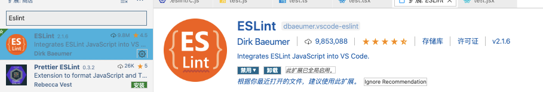
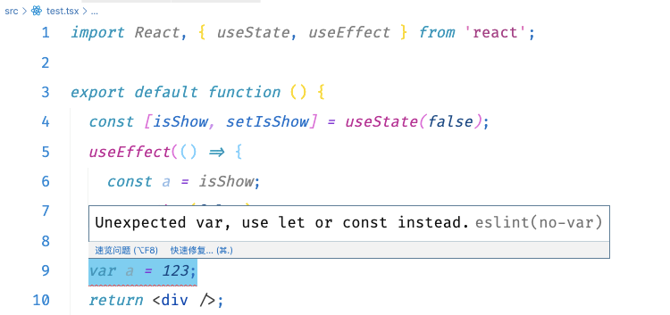

背景
teacher-web 端之前用的是 tslint，考虑到 typescript 团队已经停止维护 tslint，且 Eslint 规范更多，所以将教师空间中的 ts 代码检查整合到 Eslint 中。整理此份文档，方便后续参照。
鉴于项目中普遍用的均为 alloyTeam 的配置规范，所以最终决定 js 和 ts 文件的 eslint 配置均统一使用 alloyTeam 的配置规范。详细地址见eslint-config-alloy
第一步：安装/更新 Vscode 插件 Eslint
vscode 中更新 Eslint 插件到最新版，保证对 typescript-eslint 的支持。

第二步：安装 Eslint-config-alloy
AlloyTeam ESLint：是一套先进的适用于 React/Vue/Typescript 项目的 ESLint 配置规范，而且也是配置个性化 ESLint 规则的最佳参考。
1 | npm install --save-dev eslint typescript @typescript-eslint/parser @typescript-eslint/eslint-plugin eslint-plugin-react eslint-config-alloy |
安装完毕后，在.eslintrc.js 文件中新增配置如下:
1 | module.exports = { |
此时项目已经支持对 ts 的 eslint 限制， 可以通过新建一个 index.tsx，在其中新建变量 var，此时 eslint 会进行报错：

ps: 如果装完后，vscode 没有成功给出提示。先打开 vscode 命令行，在“终端”中选择 Eslint，查看具体错误。如果是报找不到包的错误，很可能是之前安装过上面的某个包，版本和现在安装的其他包不兼容。可以试试先将上面的所有包全部 uninstall，再重新 install。
第三步：安装 hook 规范
1 | npm install --save-dev eslint-plugin-react-hooks |
安装完毕后，在.eslintrc.js 文件中新增
1 | extends: [ |
这里我们使用的是 plugin 提供的推荐配置，想要自定义配置可自行参照官方文档，在 rules 中进行配置。